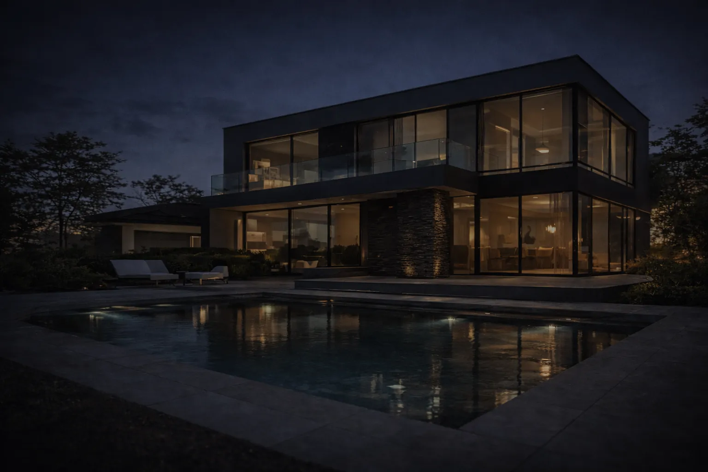

Oferta
Realizujemy inwestycje kompleksowo: od analizy potrzeb i projektu, po wykonanie, uruchomienie oraz dokumentację. Jeśli nie widzisz tu dokładnie tego, czego potrzebujesz — skontaktuj się z nami. Dobierzemy rozwiązanie do Twojej inwestycji.
Instalacje elektryczne
Instalacja, której po wykończeniu nie widać, a która przez lata po prostu działa. Zaczynamy od rozmowy o tym, jak będziecie korzystać z domu, a kończymy na opisanej rozdzielnicy i protokole pomiarów.
Rozplanowanie gniazd, łączników i punktów świetlnych robimy razem z inwestorem na rzutach domu – tak, żeby gniazdo nie wylądowało za szafą, a włącznik po złej stronie drzwi. Obwody dzielimy według pomieszczeń i odbiorników, z zapasem na to, co dojdzie za kilka lat.
W stanie surowym prowadzimy okablowanie, osadzamy puszki i wprowadzamy przewody do rozdzielnicy. Każdy przewód i każda puszka dostaje opis obwodu – widać to na zdjęciach z naszych budów. Po tynkach wracamy na montaż osprzętu i oświetlenia.
Zakres
- rozplanowanie punktów elektrycznych na rzutach
- okablowanie w stanie surowym, puszki, przepusty
- zasilanie od złącza do rozdzielnicy
- obwody siłowe: płyta indukcyjna, pompa ciepła, ładowarka samochodu
- montaż gniazd, łączników i oświetlenia
- opis obwodów i pomiary odbiorcze


Automatyka i smart home
Inteligentny dom zaczyna się od przewodów, nie od aplikacji. Jeśli okablowanie zaplanujemy na etapie budowy, sterowanie można potem rozbudowywać bez kucia ścian.
Dobieramy system do inwestycji i budżetu: od sterowania oświetleniem i roletami, przez ogrzewanie w strefach, po sceny („wyjście z domu”, „noc”, „kino”) wywoływane jednym przyciskiem albo z telefonu.
Automatykę łączymy z instalacją fotowoltaiczną i magazynem energii, żeby dom korzystał z prądu wtedy, gdy jest najtańszy albo własny. Szafę automatyki projektujemy razem z rozdzielnicą – czytelnie opisaną, z miejscem na rozbudowę.
Zakres
- projekt automatyki razem z instalacją elektryczną
- sterowanie oświetleniem, roletami i bramą
- ogrzewanie strefowe i harmonogramy
- sceny i sterowanie z telefonu
- okablowanie sieci LAN i punkty Wi-Fi
- zarządzanie energią z PV i magazynu

Fotowoltaika i magazyny energii
Montujemy instalacje fotowoltaiczne na dachach i na konstrukcjach gruntowych, a do istniejących systemów dokładamy magazyny energii.
W naszych realizacjach pracują falowniki hybrydowe SolaX i Huawei z magazynami energii. Falownik, zabezpieczenia AC/DC i magazyn montujemy jako jeden uporządkowany zestaw – z rozłącznikami, ochroną przeciwprzepięciową i opisem.
Po uruchomieniu podłączamy moduł komunikacyjny, więc produkcję, zużycie i stan magazynu widać w aplikacji. Przy dachu z instalacją odgromową układamy panele tak, żeby zachować odstępy od zwodów.
Zakres
- instalacje dachowe i na konstrukcji gruntowej
- falowniki hybrydowe i sieciowe
- magazyny energii, także do istniejących instalacji
- zabezpieczenia AC/DC i ochrona przeciwprzepięciowa
- monitoring pracy w aplikacji
- zgłoszenie instalacji do operatora sieci


Rozdzielnice i dokumentacja
Rozdzielnica to miejsce, do którego elektryk wraca po latach. Budujemy je tak, żeby każdy – także ktoś spoza naszej firmy – wiedział, co jest czym.
Montujemy rozdzielnice natynkowe, podtynkowe i wysokie szafy dla domów, lokali i budynków usługowych. Aparaty układamy w logiczne rzędy, przewody prowadzimy w korytkach, a każdy obwód dostaje opis na aparacie i w dokumentacji.
Standardem jest ochrona przeciwprzepięciowa i wyłączniki różnicowoprądowe dobrane do obwodów. Po zakończeniu przekazujemy schemat rozdzielnicy, opis obwodów i protokoły pomiarów.
Zakres
- rozdzielnice natynkowe, podtynkowe i szafy wolnostojące
- ochrona przeciwprzepięciowa
- zabezpieczenia nadprądowe i różnicowoprądowe
- opis aparatów i obwodów
- schemat jednokreskowy rozdzielnicy
- modernizacja starych rozdzielnic


Instalacje odgromowe
Ochrona odgromowa na dachach płaskich z attyką, na dachówce, blasze i przy instalacjach fotowoltaicznych.
Na dachach płaskich prowadzimy zwody po attyce i stawiamy maszty na podstawach betonowych, które nie naruszają pokrycia. Na dachach skośnych montujemy przewody na wspornikach dobranych do pokrycia – inne pod karpiówkę, inne pod blachę.
Gdy na dachu są panele, maszty ustawiamy tak, żeby panele znalazły się w strefie ochronnej, z zachowaniem odstępów separacyjnych. Instalację kończymy pomiarem rezystancji uziemienia i protokołem.
Zakres
- zwody poziome na dachach płaskich i attykach
- maszty i iglice odgromowe
- wsporniki dobrane do pokrycia dachu
- ochrona instalacji fotowoltaicznych
- przewody odprowadzające i uziemienie
- pomiar rezystancji uziemienia


Pomiary i odbiory
Pomiar to dowód, że instalacja jest bezpieczna. Wykonujemy go po każdej naszej realizacji i jako osobną usługę – przy odbiorze domu, sprzedaży mieszkania czy okresowej kontroli.
Prawo budowlane (art. 62) wymaga, żeby instalację elektryczną i piorunochronną budynku sprawdzać co najmniej raz na 5 lat. Pomiary są też potrzebne przy odbiorze nowej instalacji i często przy ubezpieczeniu domu.
Każdy pomiar kończymy protokołem z wynikami i listą ewentualnych usterek – z informacją, co trzeba poprawić i dlaczego.
Zakres
- ciągłość przewodów ochronnych
- rezystancja izolacji
- impedancja pętli zwarcia
- działanie wyłączników różnicowoprądowych
- rezystancja uziemienia i instalacji odgromowej
- protokoły pomiarowe
Porozmawiajmy o inwestycji
Opisz krótko, co budujesz albo co chcesz zmienić. Oddzwonimy, dopytamy o szczegóły i umówimy się na oględziny lub rozmowę nad projektem.
Telefon+48 697 296 018 E-mailbiuro@e-aton.pl